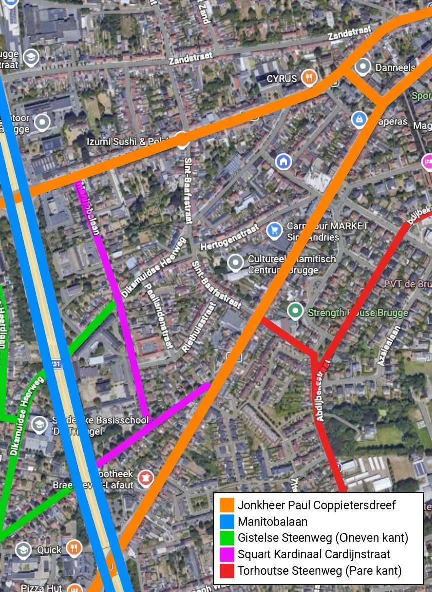
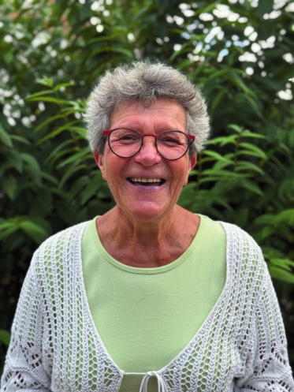
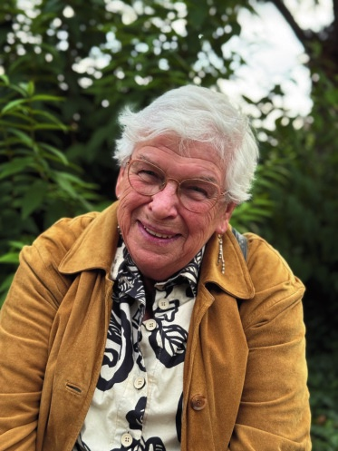
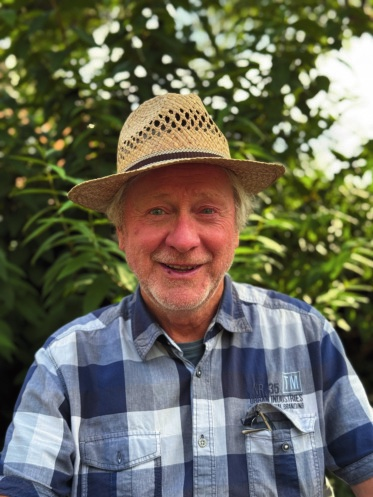
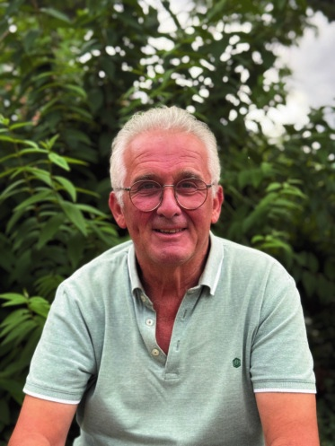
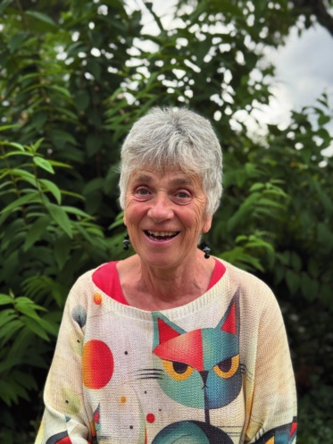
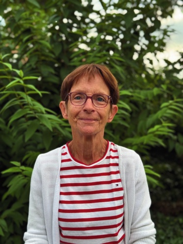
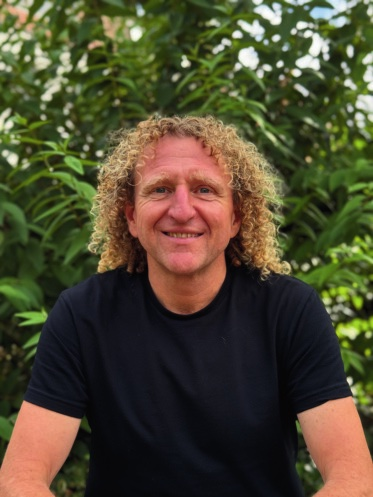
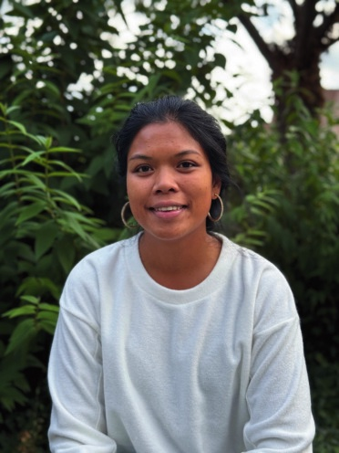
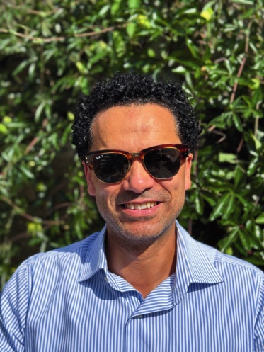

Welkom
Vind je het ook fijn om je buren te leren kennen? Om samen te leren, te spelen, te sporten, te eten, te drinken, en vooral plezier te maken…?
Dan ben je aan het juiste adres: Buurthuis 't Pleintje. Het is gelegen op het kruispunt van de Sint-Baafsstraat en de Diksmuidse Heerweg.
Van 0 tot 110 jaar — jullie zijn welkom!
Onze buurt
We bedelen nieuwsbrieven in dit gebied:

Woon je iets verder in de buurt? Je bent ook welkom.
Wil je het nieuws digitaal ontvangen? Stuur een mailtje naar buurtcomite.tpleintje@gmail.com met vermelding 'digitale nieuwsbrief'.
Geschiedenis
Het buurtpaviljoen wordt gebouwd als 'Kaarterspaviljoen'. Het beheer valt onder OCMW – Mintus Brugge.
Bij buurtbijeenkomsten inspireert het vaak ongebruikte Paviljoentje tot nieuwe ideeën en mogelijke initiatieven.
Oprichting van Buurtcomité 't Pleintje.
Over ons
We zijn een groep enthousiaste mensen die van 't Pleintje een leuke ontmoetingsplek willen maken voor de buurt.
Met het Buurtcomité willen we een buurthuis creëren waar iedereen elkaar kan vinden voor ontspannende, verbindende en duidende activiteiten. We stimuleren initiatieven uit de buurt, met respect voor de rust van de onmiddellijke buren.
Heb je zin om mee te helpen? Stuur ons een mailtje!





Onthaal: Anneke, Bertje, Charlotte, Greet en Kaat
Sport: Anneke, Ivan, Kristof (lopen) en Mony
Extra: Abdel, Bruno, Gilles, Helena, Inge, Jan, Koen, Lieve, Lotje en Pieter




Het buurthuis
Het buurthuis is eigendom van Mintus. Er kunnen geen privéfeestjes gehouden worden — op activiteiten worden alle buurtbewoners uitgenodigd.
Heb je een tof idee dat je wil uitwerken voor de buurt? Laat het ons weten.
Partners
Mintus
Gebruik van de locatie, aanbod activiteiten en logistieke ondersteuning.
Stad Brugge – Brugse Buurten
Aanbod activiteiten en buurtcheques.